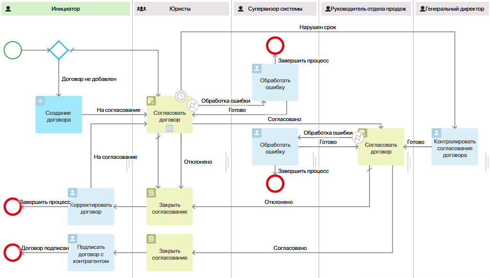
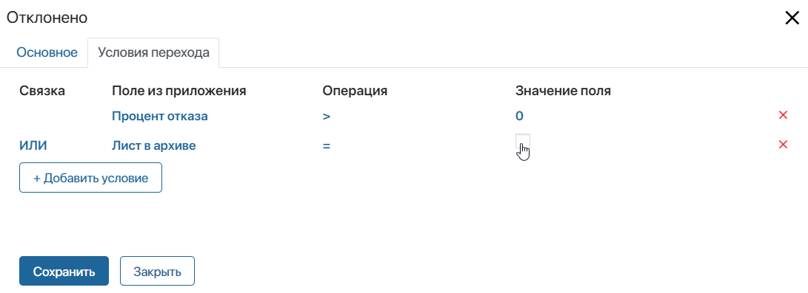
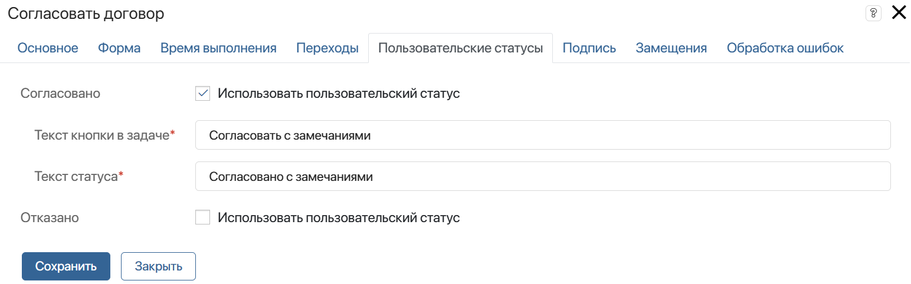
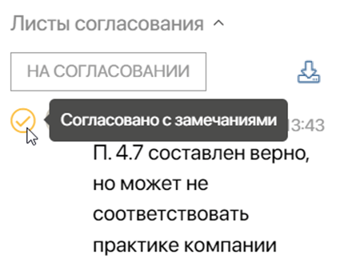

Рассмотрим пример процесса с настроенным маршрутом согласования договора.

Он состоит из следующих шагов:
- Инициатор подготавливает договор и отправляет его на согласование юристам.
- Формируется лист согласования. Любой сотрудник юридического отдела может изучить договор, а затем одобрить его, согласовать с замечаниями или отправить на доработку, добавив версию с комментариями. После вынесения резолюции задача согласования снимется с других пользователей, и процесс может пойти по нескольким веткам.
- Если договор согласован юристом, он отправляется на согласование руководителю отдела продаж.
- Если документ необходимо доработать, инициатору приходит задача внести правки. Текущее согласование закрывается. Затем договор отправляется на повторное рассмотрение. При этом формируется новый лист согласования.
- Для обоих этапов согласования предусмотрены действия в случае ошибки. Супервизору системы ставится задача обработать ошибку и вернуть процесс в работу.
- После того как юрист и начальник отдела продаж одобрят документ, согласование закрывается, и в карточке договора отображается финальная резолюция. Инициатор получает задачу организовать встречу с заказчиком для подписания договора.
- Если юристы не успевают рассмотреть документ в установленный срок, генеральному директору назначается задача контроля согласования.
Настроить первый этап согласования
У задачи юристов Согласовать договор есть четыре исходящих перехода:
- Согласовано;
- Отклонено;
- Нарушен срок;
- Обработка ошибки;
- Переход по умолчанию.
Договор придёт на согласование всем юристам одновременно. При этом, как только кто‑то из сотрудников вынесет резолюцию, задача отменится для всех остальных исполнителей, и текущее согласование закончится. Чтобы такая логика согласования выполнялась, настройте задачу и условия для переходов:
- В настройках блока укажите способ согласования Вручную и выберите опцию параллельного исполнения.
- Настройте переход Согласовано.
Дважды нажмите на переход на схеме процесса и откройте вкладку Условия перехода. Добавьте условие Процент согласования > 0. Тогда, как только кто‑то нажмёт Согласовать в задаче, она отменится для всех остальных согласующих. Процесс перейдёт к следующему шагу — согласованию с руководителем отдела продаж.
- Настройте переход Отклонено.
Чтобы задачу выполнял только один сотрудник, создайте условие Процент отказа > 0.
При согласовании юристы могут добавить новую версию договора с комментариями. Тогда лист согласования перейдёт в архив, а процесс прервётся.
Чтобы избежать завершения процесса, добавьте ещё одно условие. Выберите связку ИЛИ и значение Лист в архиве. Для операции укажите знак равенства. В столбце Значение поля нажмите на <Не определен>, выберите Ввести значение и отметьте опцию флажком. Тогда при добавлении новой версии документа процесс перейдёт по ветке Отклонено.

начало внимание
Для использования опции Лист в архиве в настройках приложения нужно задать правила архивации листов согласования.
конец внимание
Если одно из заданных условий выполнится, инициатору придёт задача Корректировать договор, а задача согласования будет отменена для других юристов.
- Настройте переход Нарушен срок.
Ограничьте время выполнения для задачи согласования. Если юристы не успеют вынести резолюцию в срок, генеральному директору придёт задача контроля.
Откройте настройки блока и перейдите на вкладку Время выполнения. Задайте точное время для задачи, например, три дня, и в поле Прервать выберите переход в задачу Контролировать согласование договора. После сохранения настроек этот переход на схеме отметится значком часов.
- Настройте переход по умолчанию.
Чтобы процесс мог продолжаться, если ни одно из условий не будет выполнено, необходимо указать переход по умолчанию.
Для такого перехода нельзя задавать условия. Поэтому выбрать ветки Согласовано или Отклонено нельзя. Добавьте ещё один переход и в настройках блока отметьте его как переход по умолчанию. На схеме он отобразится как стрелка с косой чертой.
- Настройте переход Обработка ошибки.
Вы можете сделать так, чтобы в случае ошибки при работе блока согласования процесс продолжился по специальной ветке. В нашем примере в ветке для обработки ошибок супервизору системы назначается задача, в рамках которой он решает проблему и возвращает процесс в работу.
Для этого откройте вкладку Обработка ошибок, установите флажок напротив опции Прервать и выберите настроенный переход Обработка ошибки. На схеме рядом с ним отобразится значок  .
.
- Добавьте пользовательский статус Согласовано с замечаниями, чтобы при согласовании юрист мог дополнительно обратить внимание руководителя отдела продаж на какой‑то аспект договора. Статус отобразится в задаче согласования в виде кнопки. Если юрист нажмёт её, его комментарий в листе согласования будет отмечен цветом. Пользовательский статус не влияет на ход процесса — при его использовании считается, что юрист одобрил договор.
Чтобы создать дополнительный статус, в настройках блока перейдите на вкладку Пользовательские статусы. Напротив поля Согласовано поставьте флажок Использовать пользовательский статус и задайте название кнопки в задаче и текст статуса в листе согласования.

Если юрист при выполнении задачи нажмёт кнопку Согласовать с замечаниями, процесс перейдёт к согласованию руководителем отдела продаж. В листе согласования отобразится пользовательская резолюция.

- Разместите на схеме графический элемент Закрыть согласование после задачи юристов. Тогда, если сотрудник отправит договор на доработку, лист согласования закроется с резолюцией Отказано.
Настроить второй этап согласования
Вторая задача Согласовать договор расположена в зоне ответственности с одним исполнителем. Это значит, что к ней не применяется параллельное или последовательное согласование. Задайте для неё следующие параметры:
- В настройках блока выберите способ согласования Вручную.
- На вкладке Переходы для перехода Согласовано установите условие Процент согласования > 0. Процесс пойдёт по этой ветке только в том случае, если руководитель утвердит документ.
- Отметьте переход Отклонено как переход по умолчанию.
- На вкладке Обработка ошибок включите опцию Прервать и укажите переход для обработки ошибок при работе блока. Супервизору системы будет назначаться задача обработать ошибку и вернуть процесс в работу.
- Разместите после блока согласования графический элемент Закрыть согласование, чтобы инициатор видел лист согласования с резолюцией при подписании договора с контрагентом.
Сохраните и опубликуйте настроенный процесс.